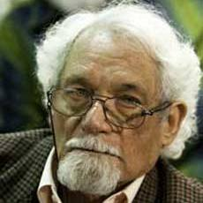

-
Pablo Armando Fernández

Pablo Armando Fernández Pérez. (Central Delicias, Las Tunas, Cuba, 2 de marzo de 1929) es un destacado poeta y narrador cubano, Premio Nacional de Literatura. Destacado intelectual cubano, poeta, novelista, ensayista, autor teatral y traductor de la poesía anglosajona. Fue miembro del equipo de dirección de Lunes de Revolución y desempeñó importantes responsabilidades en las instituciones culturales cubanas a partir del triunfo de la Revolución.
Después de cursar la primera enseñanza en su pueblo natal, se trasladó Estados Unidos en 1945, donde estudió en el Washington Irving High School de Nueva York; también asistió a algunos cursos en la Universidad de Columbia. En 1959, regresó a Cuba. Fue subdirector de Lunes de Revolución (1959-1961) y secretario de redacción de la Casa de las Américas (1961-1962). Fue consejero cultural de la embajada de Cuba en Gran Bretaña (1962-1965). Asistió al Encuentro de la Sociedad de Escritores Ennio Lenio, a bienales de poesía de Bélgica (1963-1965), al Congreso de poetas en Edimburgo (1964-1965). Colaboró en Unión, Bohemia, Literatura Moderna, Europa, Parva, Arts and Society, New Left Review, La Gaceta de Cuba. Ha sido invitado también a los festivales de Malmö, Suecia y en 1985 participó en el Primer Encuentro Internacional de Lengua Española, realizado en las Islas Canarias, España, donde se reunió la pléyade de los más destacados escritores iberoamericanos. A finales de marzo de 2008 participó en el IV Festival Internacional de Esmirna, Turquía, dedicado a Latinoamérica, junto a los poetas Sergio Badilla Castillo de Chile, Diana Bellessi de Argentina, María Baranda de México, Rafael Courtoisie de Uruguay, Margarita Laso de Ecuador y Rei Berroa de República Dominicana. En la Universidad de Estambul, recibió el Premio del PEN Club de Turquía por su obra poética total.
Ha sido miembro del jurado de importantes premios literarios, entre los que destacan el Premio Casa de las Américas, categorías Poesía (1966) y Literatura Caribeña en Lengua Inglesa (1982), y el Premio Cervantes (1992). Ha escrito poesía, novela, teatro y ensayo. Su obra pasa de ser intimista a ser comprometida con lo social.
Premios y distinciones
- 2008 Premio Yunus Emre del PEN Club de Turquía.
- 1996 Premio Nacional de Literatura de Cuba
- 1969 Accésit al Premio Adonáis de Poesía 1969 por Un sitio permanente
- 1968 Premio Casa de las Américas por la novela Los niños se despiden
- 1963 Mención en el Premio Casa de las Américas por su poemario El libro de los héroes.
Che, todos los homenajes
...
Aprendiendo a morir
Mientras duermen mi mujer y mis hijos y la casa descansa del ajetreo familiar, me levanto y reanimo los espacios tranquilos. Hago como si ellos –mis...